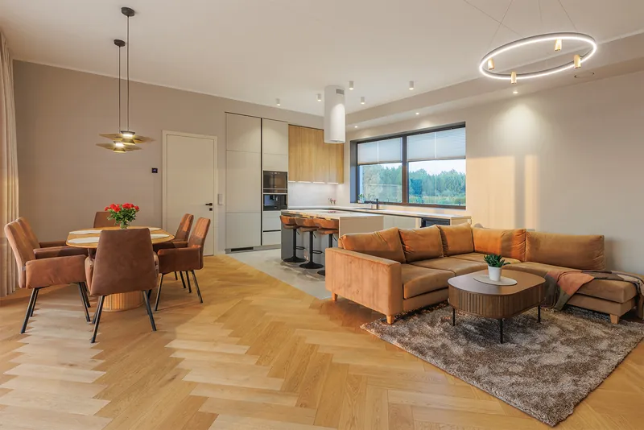
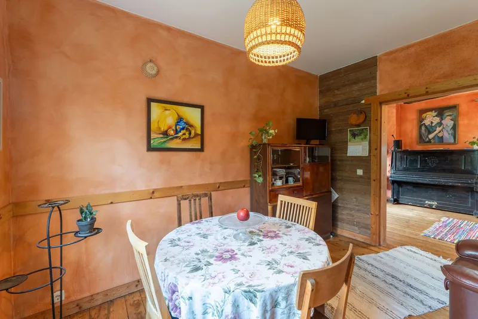

Lühivastus
Eraisik ostab fotograafilt ühe korra ilusaid pilte. Maakler ostab protsessi: kokkulepitud tähtaeg, ettearvatav kvaliteet, sama stiil igal objektil ja võimalus mitte ise kohal olla. Kvaliteet on eeldus, mitte müügiargument – vahe tekib usaldusväärsuses.
Oleme pildistanud nii eraisikutele kui maakleritele ja vahe on suurem, kui esmapilgul tundub. Eraisik müüb kodu üks kord kümne aasta jooksul. Maakler teeb sama asja igal nädalal – ja tema jaoks ei ole küsimus mitte selles, kas fotod on ilusad, vaid kas nad tulevad õigel ajal ja alati ühesugused.
Siin on see, mida maaklerid meilt kõige sagedamini küsivad – ja mis nende koostöös päriselt loeb.
Maakleri töövoog on ahel: müügiesindusleping, pildistamine, kuulutus, näitamised. Kui fotod hilinevad kaks päeva, nihkub kogu ahel ja kliendile tuleb selgitada, miks objekt ei ole veel üleval.
Seepärast on kokkulepitud tähtaeg maakleri jaoks tihti tähtsam kui see, kas tähtaeg on 24 või 48 tundi. Ettearvatav 48 tundi on parem kui „tavaliselt ühe päevaga, aga vahel kolme“.
Maakleri kõige kallim ressurss on aeg. Kui iga pildistamine tähendab tund aega kohapeal seismist, on see kuus kuus tundi, mis oleks võinud minna uute objektide hankimisele.
Praktikas tähendab see, et fotograaf peab suutma:
See on ka põhjus, miks meil on olemas ettevalmistuse nimekiri – selle saab maakler müüjale edasi saata ja teema on lahendatud ilma ühegi lisakõneta.
Üksik ilus foto ei ehita mainet. Maakleri portfoolios on kolmkümmend objekti ja neid vaadatakse koos – tema kodulehel, tema Facebooki lehel, tema kuulutuste nimekirjas portaalis.
Kui iga objekt on pildistatud eri inimese poolt eri stiilis, ei teki mingit äratuntavust. Kui nad on kõik ühte nägu, tekib bränd. Sellest on eraldi artikkel.

Iga objekti kohta eraldi pakkumise küsimine on maakleri jaoks halduskulu. Ta tahab teada hinda enne, kui ta müüjaga kohtub – sest ta peab selle oma teenuse sisse arvestama.
Meie hinnad on avalikult väljas just sel põhjusel. Regulaarselt tellivatele on olemas ka igakuine pakett, kus hind ja töötlusstiil on ette kokku lepitud ja broneering on prioriteetne.
Maakleri portfoolios ei ole ainult uusarendused. On ka kaheksakümnendate paneelmaja, kolimata korter, majad, kus elab veel keegi, ja objektid, mille valgus on lootusetu.
Fotograaf, kes teeb häid pilte ainult ilusatest kodudest, ei ole maakleri jaoks kasulik. Vahe tekibki keerulistel objektidel: kas pime esimese korruse korter tuleb kasutatava komplektina või mitte.

Maakler kasutab fotosid rohkemas kohas kui üks portaalikuulutus: oma kodulehel, sotsiaalmeedias, reklaamides, esitlusmaterjalides ja hiljem referentsina. Kokkulepe peab seda lubama ja see tuleb selgeks rääkida enne, mitte pärast.
Kui otsid fotograafi. Küsi kolme asja: milline on tähtaeg ja kas ta on kirjas; kas saab näha tervet komplekti ühest objektist, mitte parimaid üksikuid kaadreid; ja mis juhtub, kui tähtaeg ei pea. Vastused kolmele küsimusele ütlevad rohkem kui ükski portfoolio.
Maaklerile ja büroole. Regulaarsete objektide puhul on olemas igakuine pakett: prioriteetne broneering, fikseeritud hind ja kokkulepitud töötlusstiil. Vaata kinnisvarabüroodele mõeldud lehte.
Küsi pakkumine